一、软件概述
1.1 软件简介
有风无界APP 是一款基于 Android 平台的流媒体浏览器工具， 主要功能：多标签浏览器、视频嗅探、在线播放、多线程下载、边下边播、广告拦截、隐身模式、无痕模式、阅读模式、视频投屏、文件互传等。
1.2 运行环境
| 项目 | 要求 |
|---|---|
| 操作系统 | Android 7.0 (API 24) 及以上 |
| 硬件要求 | 建议 2016 年后发布的手机，过旧设备可能无法正常使用 |
| 存储空间 | ~46MB 以上（含安装包与运行缓存） |
| 网络要求 | 支持 WiFi / 移动网络 |
1.3 功能总览
| 功能模块 | 核心能力 |
|---|---|
| 多标签浏览器 | 多标签管理、书签、历史记录、无痕模式、标签持久化、第三方网站拦截、第三方APP拦截、右键功能 |
| 广告拦截 | 网页广告过滤（EasyList/EasyPrivacy） |
| 视频嗅探 | 自动识别网页中的音视频资源，支持 M3U8 / MP4 等8种常见音视频格式 |
| 剧助手 | 追美剧、追韩剧、追日剧，一键采集剧集，自动分析视频链接，一键创建下载任务，爽到飞起~ |
| 专属播放器 | 基于 ExoPlayer 定制，超多细节优化，手势、倍速、选集、片头/尾跳过、全屏、小窗，精心打磨，惊喜不断！ |
| 视频下载 | 多线程下载，完全不限速！下载速度的上限，取决于你的宽带上限~ |
| 边下边播 | 下载等不及？立即就能播，进度实时更新，优先播放本地源 |
| 小窗播放 | 大小任意调，位置随便拖，上层播放！回微信、逛淘宝完全不耽误追剧，无缝衔接 |
| 投屏 | 电视安装配套PC投屏软件，一键投屏，自动播放；PC端打开浏览器，粘贴投屏地址，立即播放；支持切换选集 |
| 阅读模式 | 网页正文提取，多主题阅读 |
| 书签与历史 | 书签管理、浏览历史、最近搜索 |
| 在线影院 | 聚合在线视频资源入口 |
| 文件快传 | 手机、电脑 互传文件，轻松便捷！无需数据线，同WiFi文件传输，速度比U盘还快，一键开启 |
| 隐身模式 | 浏览器记录怕被看到？一键隐藏所有使用痕迹，随便看！用完一键恢复。酷不酷~ |
| 意见反馈 | 有任何使用问题或者功能建议，都可以通过在线工单反馈~/td> |
二、安装与启动
2.1 安装方式
下载 APK 安装包后，在 Android 设备上点击安装包，按系统提示完成安装。安装完成后桌面出现"有风无界"应用图标。
2.2 启动与首次运行
点击桌面图标启动应用，首先进入启动闪屏页，随后弹出《用户隐私政策》提示。首次使用时请阅读并同意隐私政策后进入应用首页。
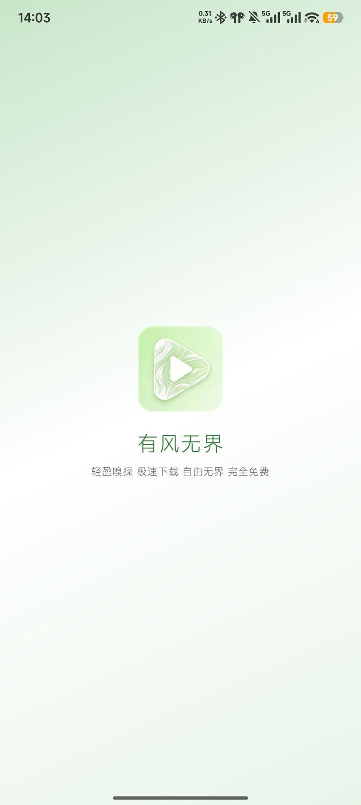
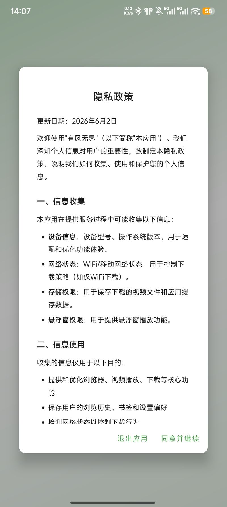
图1：启动闪屏页
三、首页与快捷入口
3.1 首页界面
启动后进入首页，界面自上而下由当前时间、应用 Logo、搜索框、快捷入口卡片区组成。快捷入口卡片支持自定义添加、排序与配色，常用功能一目了然。
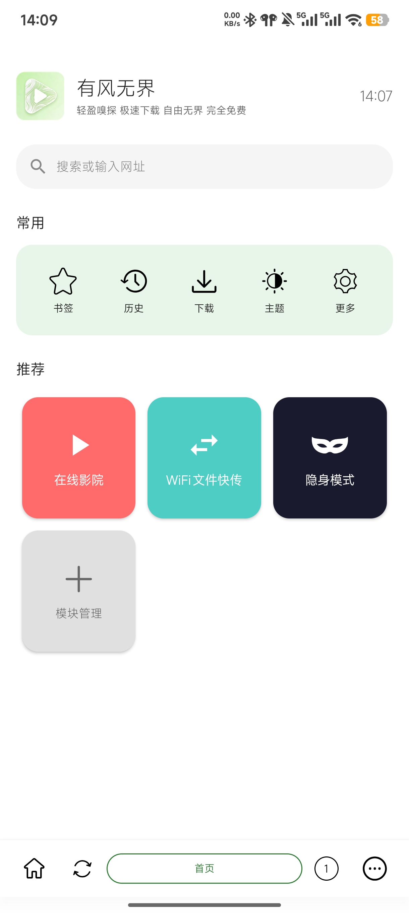
图2：首页完整界面（含时间、Logo、搜索框与快捷入口卡片）
首页固定卡片包括：
- 在线影院：进入聚合在线视频资源列表
- 文件快传：手机、电脑 互传文件，轻松便捷！无需数据线，同WiFi文件传输，速度比U盘还快，一键开启
- 隐身模式：浏览器记录怕被看到？一键隐藏所有使用痕迹，随便看！用完一键恢复。酷不酷~
其余功能（书签、历史、下载、主题、设置、搜索等）可通过"+"按钮添加到首页卡片区，长按卡片可调整顺序、更改颜色或移除。
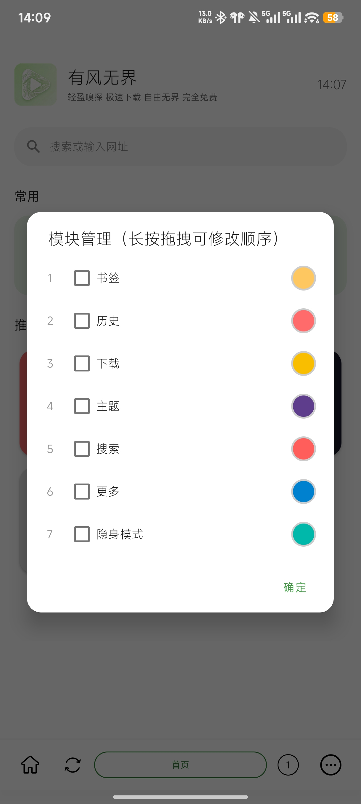
图3：首页卡片添加 / 管理界面（点击"+"后的选择弹窗）
3.2 隐身模式
点击首页"隐身模式"卡片开启隐身浏览。隐身模式下，浏览历史、书签、下载记录等全部数据与主空间完全隔离，退出后自动恢复主空间数据。
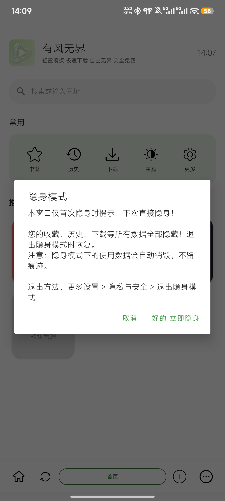
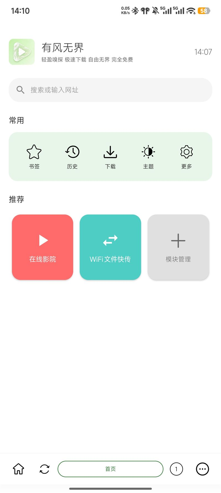
图4：隐身模式说明 / 确认弹窗，以及开启后的首页指示状态
- 退出隐身模式：更多设置 > 隐私与安全 > 退出隐身模式，点击此按钮一键退出！
3.3 底部导航工具栏
浏览器主界面底部提供工具栏：首页、刷新、搜索、标签页、更多。
其中"更多"菜单包含添加书签、书签、历史、我的下载、刷新、阅读模式、无痕模式（开启/退出）、分享链接、主题切换、剧助手等常用功能入口，右下角有更多设置的快捷入口。
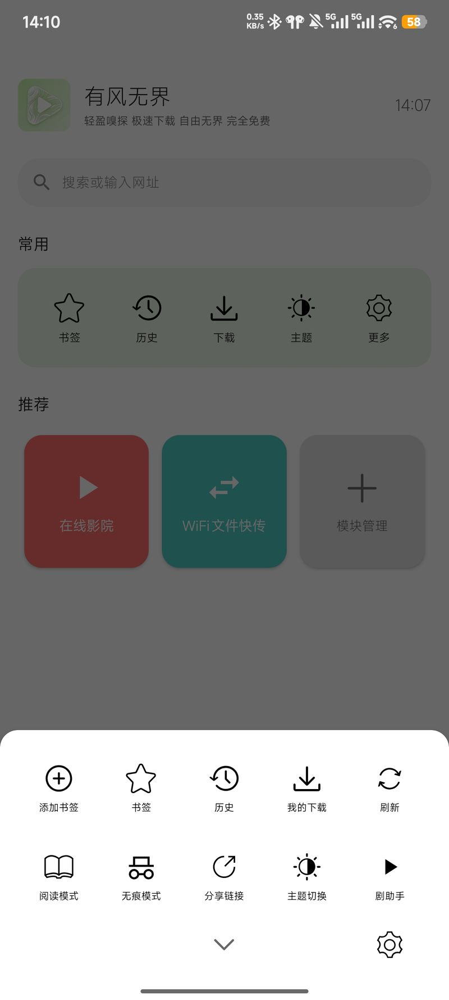
图5：浏览器底部工具栏及"更多"菜单展开效果
四、搜索与浏览器
4.1 搜索与搜索引擎
点击首页搜索框或底部"搜索"按钮，弹出底部搜索对话框。支持网址直接打开与关键词搜索两种模式；内置必应、夸克、Yandex、Yep、神马、百度、360、搜狗共 8 个搜索引擎，可在搜索框顶部横向切换；搜索历史自动记录，可一键清除。
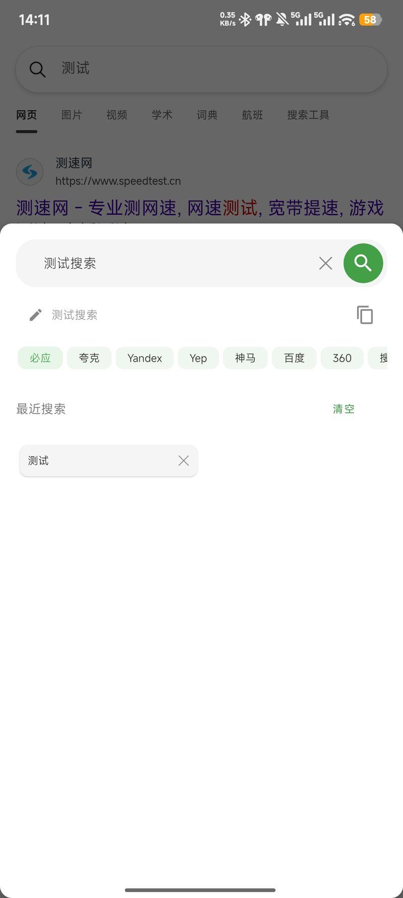
图6：搜索对话框（含搜索引擎切换栏与最近搜索记录）
4.2 多标签浏览
浏览器支持同时打开多个标签页：
- 新建标签：工具栏 / 长按链接选择"新标签页打开"
- 标签切换：点击标签按钮弹出标签面板，可切换、关闭、全部关闭
- 标签持久化：标签页自动保存，应用重启后恢复
- 域名跳转提示：跨域跳转时弹出安全提示，拦截跳转第三方应用
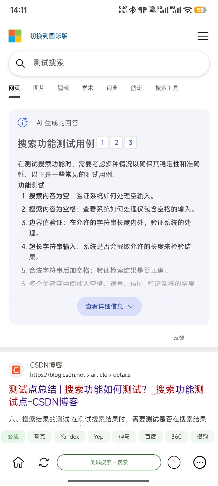
图7：浏览器网页浏览界面（含顶部进度条、底部工具栏）
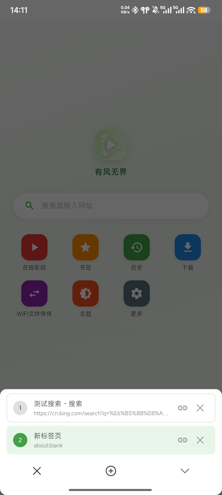
图8：多标签切换面板（底部弹出的标签列表）
4.3 网页长按菜单
在网页中长按链接、图片或文字，弹出上下文菜单，支持在新标签页打开、复制链接、识别/下载视频等操作。
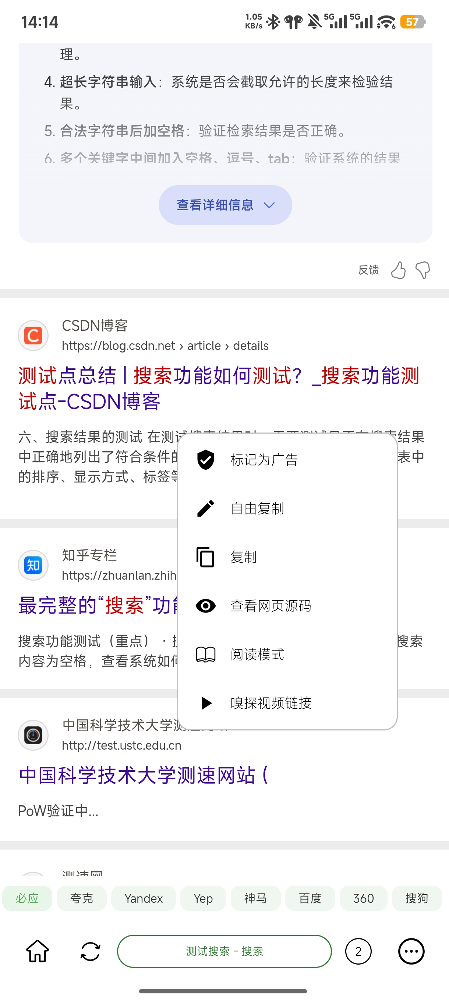
图9：网页长按右键菜单效果
4.4 网页广告拦截
基于 EasyList、EasyList China、EasyPrivacy 过滤规则，在网页加载时实时拦截广告请求并隐藏广告元素，无需配置即可生效，大幅减少弹窗与推广内容干扰。
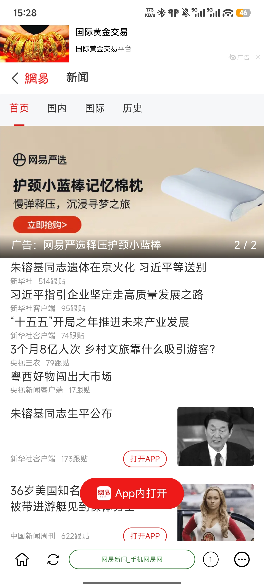
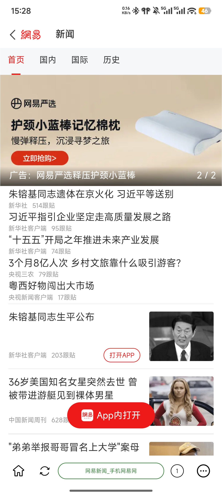
图10：同一网页开启广告拦截后的效果
4.5 视频嗅探
浏览器自动检测网页中的视频资源（M3U8 / MP4）。检测到视频后，页面边缘出现可拖拽的视频嗅探按钮并显示检测到的资源数量；点击该按钮即可将嗅探到的在线视频载入播放器直接播放，并支持在播放页内对在线资源执行下载、加入播放列表等操作。也可在网页空白处长按，通过"嗅探视频资源"手动触发嗅探。
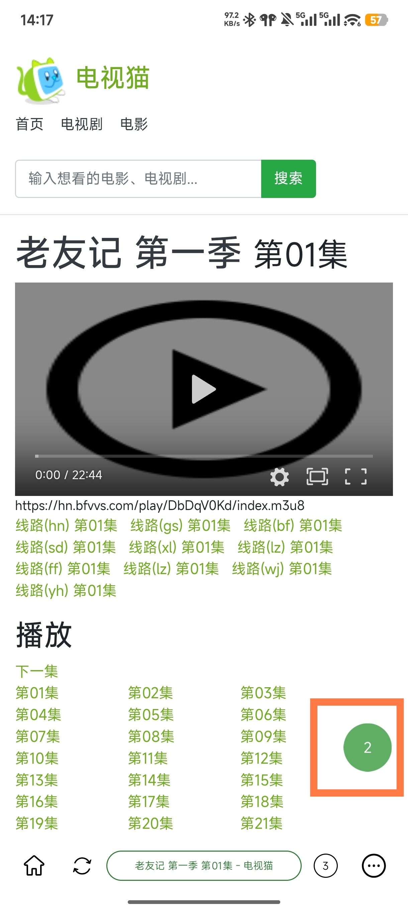
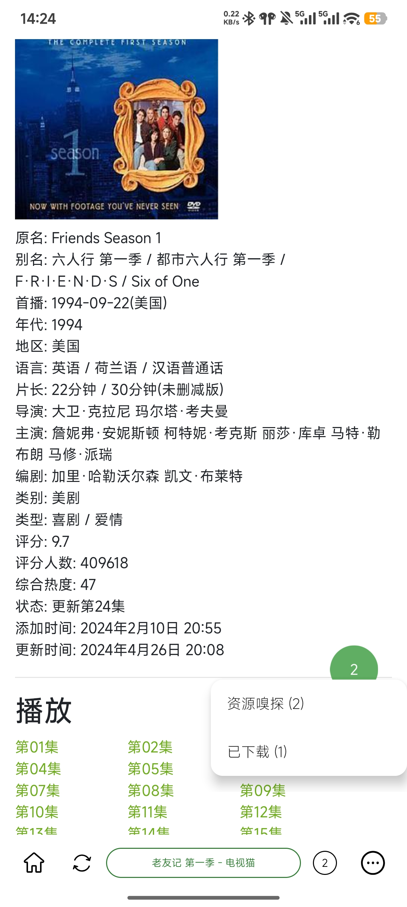
图11：视频嗅探浮动按钮及嗅探到的资源
4.6 阅读模式
打开文字类网页时，通过"更多 → 阅读模式"进入纯净阅读界面，自动过滤广告与无关元素，支持 4 种阅读主题（暖黄 / 羊皮纸 / 护眼绿 / 暗色）与字号调节。
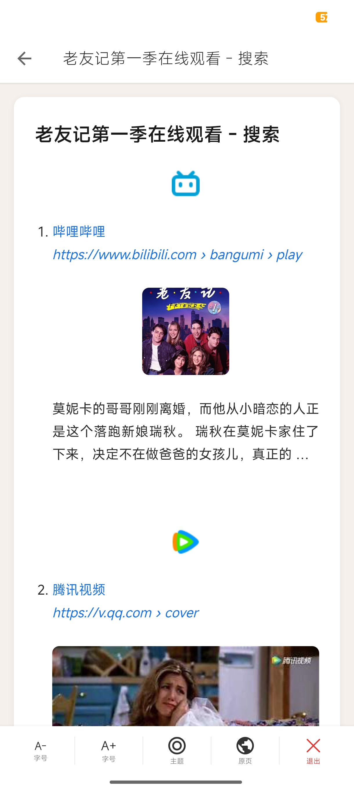
图12：阅读模式界面（含主题与字号调节按钮）
五、视频播放
5.1 播放器界面
点击嗅探结果"播放"或已下载视频进入全屏播放器。播放器基于 ExoPlayer 构建，顶部显示标题与返回按钮，右侧提供投屏、悬浮窗、倍速等快捷按钮。
图13：视频播放器全屏界面（含控制栏与右侧功能按钮）
5.2 手势控制
| 手势 | 操作 |
|---|---|
| 单击 | 显示 / 隐藏控制栏 |
| 双击左侧 1/3 | 快退（默认 10 秒，可在播放器设置中改为 5/10/15/30 秒） |
| 双击中部 | 暂停 / 播放 |
| 双击右侧 1/3 | 快进（秒数同左，可在播放器设置中自定义） |
| 长按 | 2 倍速播放，配合上下滑动可锁定倍速或恢复 1x |
| 左右滑动 | 快进 / 快退 |
| 左侧上下滑动 | 调节屏幕亮度 |
| 右侧上下滑动 | 调节媒体音量 |
| 全屏中部上下滑动 | 切换上一集 / 下一集 |
5.3 播放控制
- 倍速：0.5x / 0.75x / 1x / 1.5x / 2x / 2.5x / 3x 共 7 档可调
- 选集：播放列表切换（在线资源或已下载文件）
- 片头 / 片尾跳过：单击按钮将当前播放位置标记为片头 / 片尾时间，播放时自动跳过片头并播完片尾后自动切集；长按按钮可清除标记（仅对下载 / 本地视频生效）
- 双击快进 / 快退：时长可自定义（5 / 10 / 15 / 30 秒）
- 播放锁定：防止误触
- 播放进度记忆：退出后自动保存，再次播放可续播
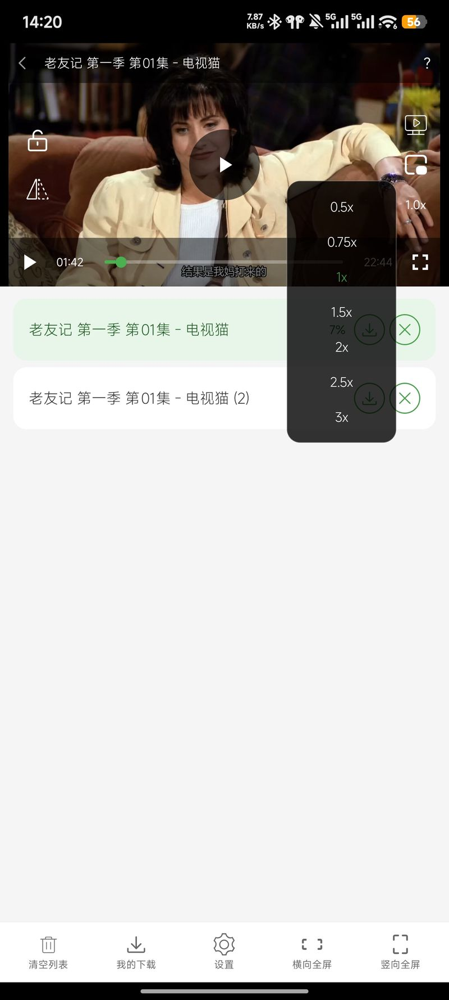
图14：倍速、播放列表与片头片尾设置
5.4 悬浮窗播放
播放器点击"悬浮窗"按钮后，视频缩小为可拖动小窗悬浮于屏幕上，可继续浏览其他内容。支持拖动位置、点击播放 / 暂停、拖到底部关闭；前台服务保证后台持续播放，通知栏提供播放 / 暂停、上一集、下一集、关闭等控制。
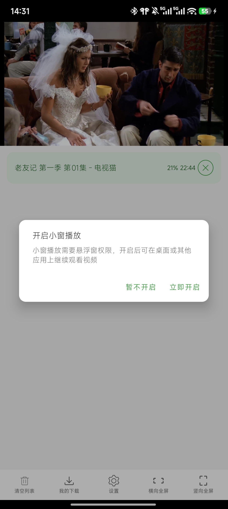
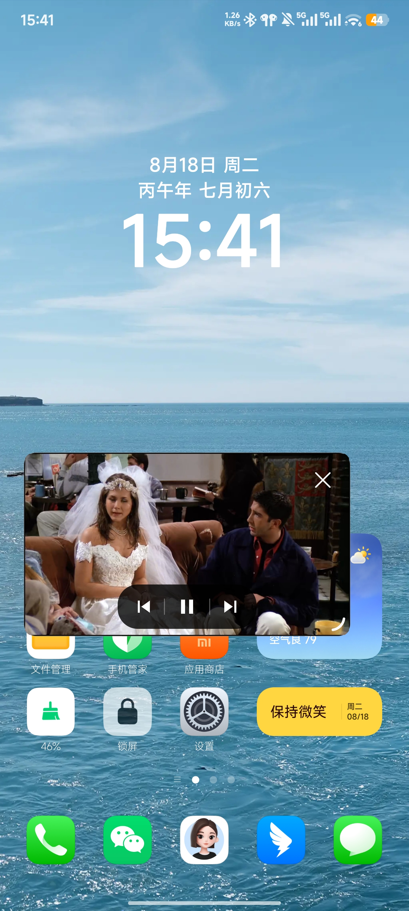
图15：悬浮窗播放效果（置于其他应用之上）
5.5 投屏播放
确保手机与电脑在同一局域网内，点击播放器"投屏"按钮，软件自动启动本地投屏服务并复制访问地址；在电脑浏览器中打开该地址即可在电脑上观看视频，同时支持播放列表切换。
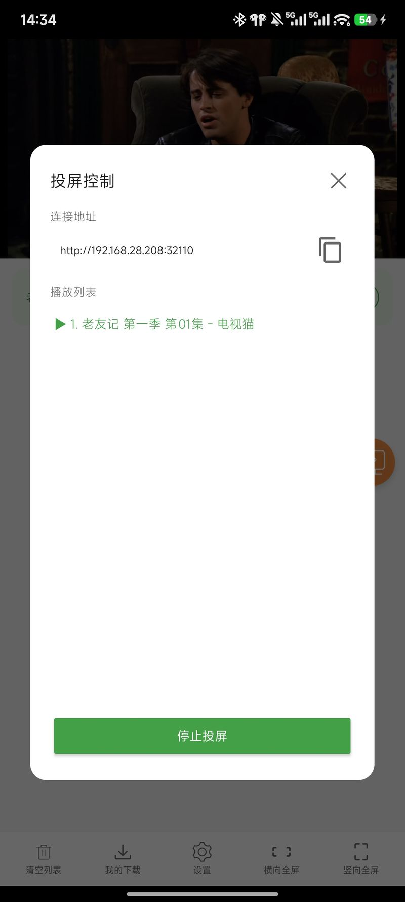
图16：投屏控制弹窗（显示访问地址，可复制 / 停止）
图17：电脑浏览器中的投屏播放页面
5.6 边下边播
下载任务进行中即可直接播放：在下载管理点击任务选择"边下边播"，播放器将已下载分片走本地、未下载分片走网络，无缝衔接播放，下载在后台持续追赶；播放页标题实时显示"已下载 xx%"，下载完成后自动无缝切换为完整视频。
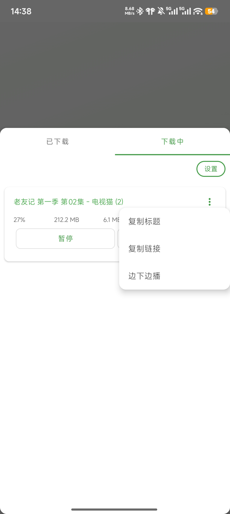
图18：下载中任务点击"边下边播"的菜单入口
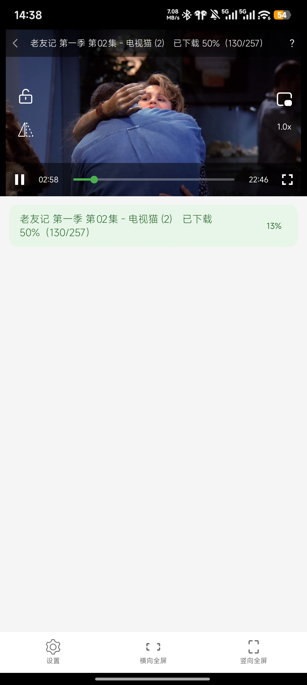
图19：边下边播播放界面（顶部标题显示已下载进度）
六、视频下载
6.1 下载方式
- 嗅探播放下载：点击视频嗅探按钮在线播放，播放页内直接触发下载
- 右键下载：长按视频链接选择"下载链接"
- 播放页下载：播放器内直接触发下载
触发后弹出下载确认弹窗，可确认任务信息后开始下载。
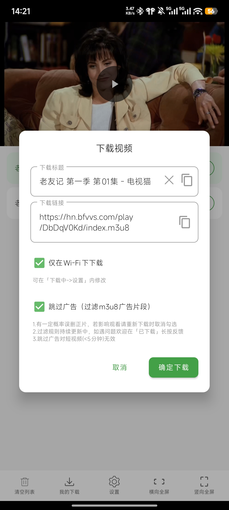
图20：视频下载确认弹窗
6.2 下载流程与能力
M3U8 视频下载流程：解析索引文件 → 智能过滤广告片段 → 多线程并发下载 TS 分片 → FFmpeg 自动合并为 MP4。
- 多线程下载：线程数 2 ~ 128 可配置，并具备自适应并发与域名限流经验优化
- 加密支持：AES-128 加密视频自动解密
- 广告过滤：关键词 + 统计分析双重检测，自动剔除广告片段
- 断点续传：支持暂停 / 恢复，网络中断自动暂停，恢复后自动继续
6.3 下载设置
在"下载管理 → 下载中"标签页点击"下载设置"，可配置下载线程数（2 / 4 / 8 / 16 / 32 / 64 / 96 / 128 共 8 档）与"仅 WiFi 下载"开关，设置即时生效。开启"仅 WiFi"后，非 WiFi 网络下不会消耗移动数据；WiFi 断开自动暂停下载，恢复后自动继续。下载确认弹窗中也可单独勾选"仅 WiFi"。
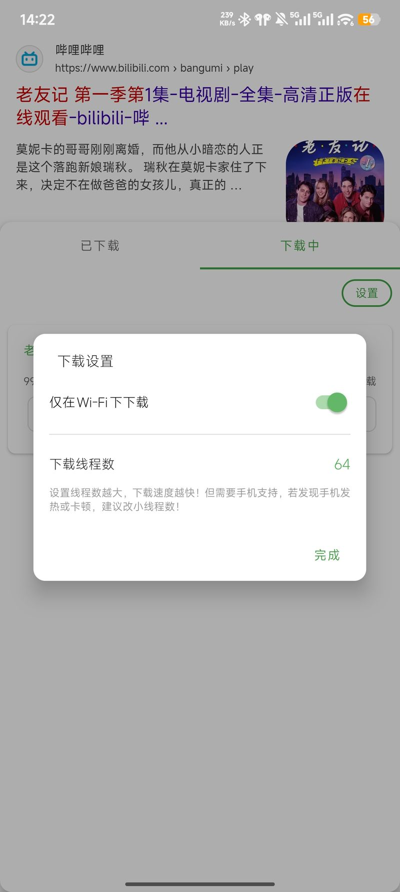
图21：下载设置弹窗（线程数选择 + 仅 WiFi 开关）
6.4 下载管理
"下载"入口进入下载管理面板，分为"下载中"与"已下载"两个标签页。
下载中：显示任务进度、下载速度、预计剩余时间，支持暂停 / 恢复、置顶 / 排序、删除。
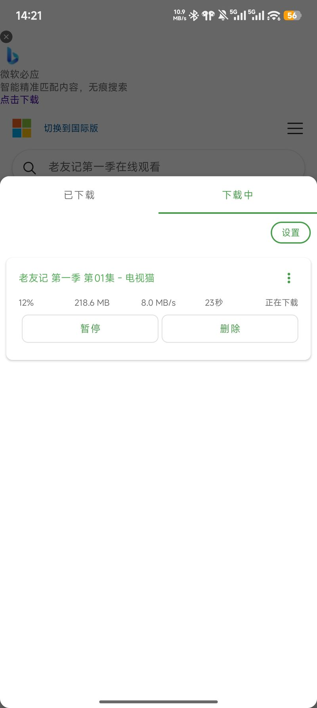
图22：下载中列表（含进度条、速度、暂停 / 恢复按钮）
七、已下载视频管理
"已下载"标签页按文件夹分组展示已完成的视频，支持：
- 缩略图：自动生成视频封面
- 排序：按名称自然排序 / 时间排序
- 播放：点击直接进入播放器
- 批量操作：多选后批量删除、批量改文件夹
- 重命名 / 改扩展名 / 修改文件夹 / 复制链接
- 边下边播：已完成任务可继续进入播放器
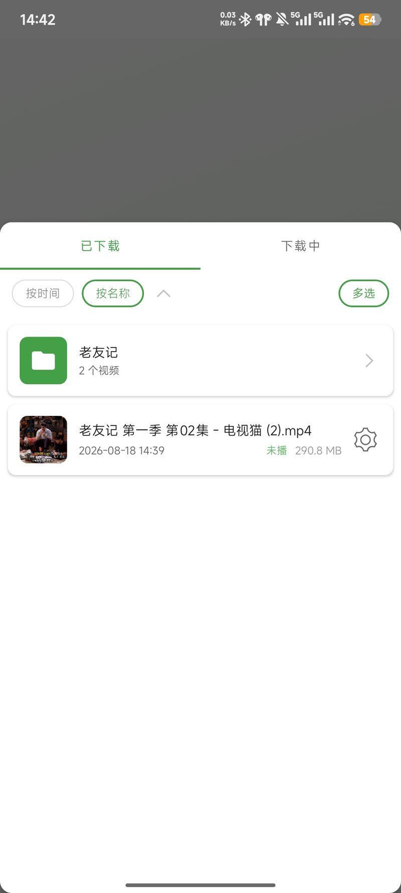
图23：已下载列表（文件夹分组 + 缩略图）
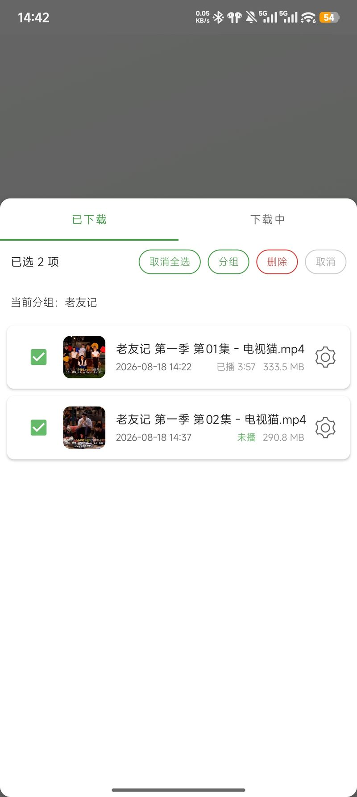
图24：已下载多选批量操作界面
八、书签与浏览历史
"书签"入口打开书签与历史合并面板，包含"书签"与"历史"两个标签页。
书签：支持添加当前页为书签、查看书签列表、点击在新标签页打开、复制链接、删除；浏览时可一键为当前页面添加书签。
历史：自动记录浏览记录，双列网格展示标题、网址与相对时间，支持单条删除与清空全部。
此外，搜索历史自动保存，可一键清除。隐身模式下的书签与历史与主空间完全隔离。
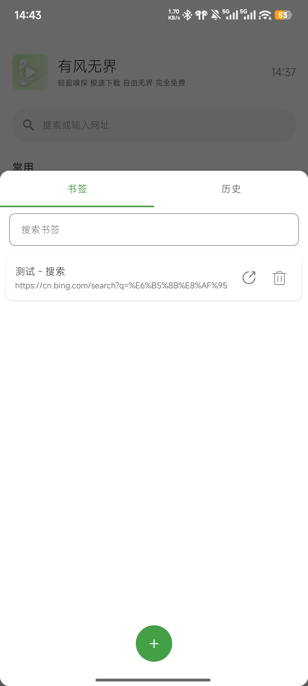
图25：书签与历史合并面板（书签标签页）
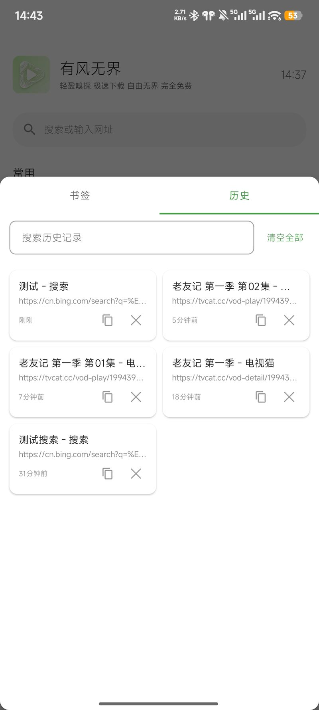
图26：历史记录标签页（双列网格 + 清除按钮）
九、在线影院
点击首页"在线影院"卡片进入聚合在线视频资源页面，展示可观看的视频列表；点击视频可进入播放器直接播放。
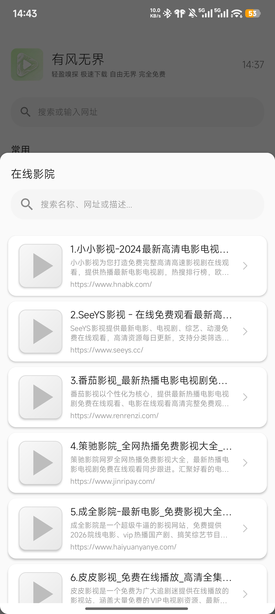
图27：在线影院页面（视频列表）
十、WiFi 文件快传
点击首页"文件快传"卡片进入文件传输面板，实现同一局域网内手机与电脑之间的文件互传，无需数据线：
- 确认手机与电脑连接同一 WiFi
- 在面板中点击"选择目录"指定共享文件夹
- 启动服务后复制显示的访问地址
- 在电脑浏览器中打开地址，即可浏览、上传、下载文件
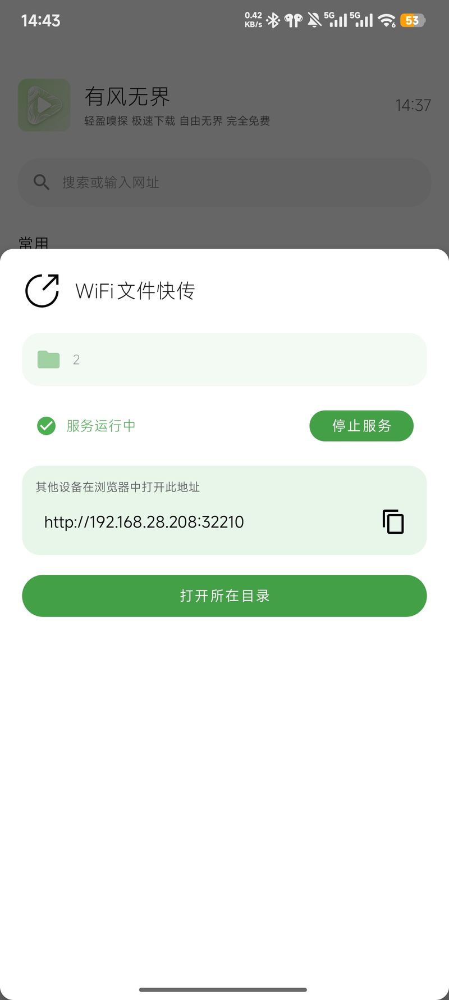
图28：文件快传面板（WiFi 状态、目录选择、访问地址与复制）
十一、意见反馈
"设置 → 意见反馈"进入反馈提交页面，填写分类、标题、问题描述并上传截图后提交；"设置 → 我的反馈"可查看全部工单记录，工单以对话形式管理，可随时查看回复并继续交流，支持关闭 / 重新开启工单。
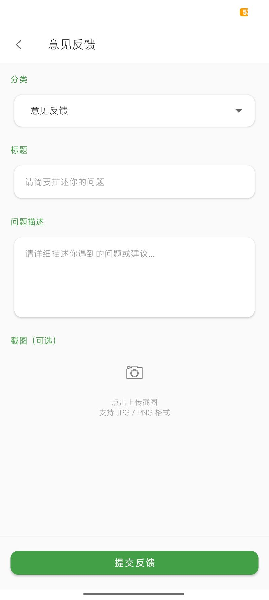
图29：意见反馈提交表单（分类、标题、描述、上传图片）
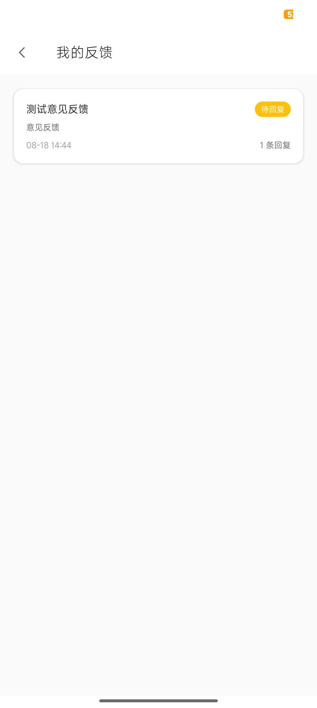
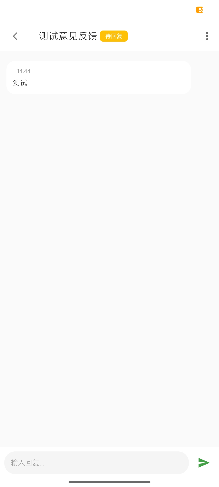
图30：我的反馈工单列表
十二、系统设置
首页"设置"按钮或"更多 → 设置"打开设置面板，主要设置项如下：
| 设置项 | 说明 |
|---|---|
| 启动页设置 | 设置应用启动时打开的页面（可选恢复上次浏览，可恢复默认） |
| 切换 UA | 切换浏览器标识（如桌面版 User-Agent），适配部分网页 |
| 加载超时时间 | 设置网页加载超时时长 |
| 恢复上次会话 | 开启后重启应用自动恢复上次打开的标签页 |
| 强制页面缩放 | 允许在网页中通过手势缩放页面 |
| 预加载模式 | 骨架屏、DNS 预解析等网页加载优化 |
| 广告拦截 | 开启 / 关闭网页广告拦截功能 |
| 隐身模式 | 进入 / 退出隐身模式 |
| 清除缓存 | 清理应用缓存数据 |
| 清空历史记录 | 删除全部浏览历史（不可恢复） |
| 图标库 | 浏览内置图标 |
| 意见反馈 | 进入意见反馈提交页 |
| 我的反馈 | 查看已提交的反馈工单 |
| 关于 | 查看软件版本与相关信息 |
| 恢复默认设置 | 将所有设置重置为出厂默认值 |
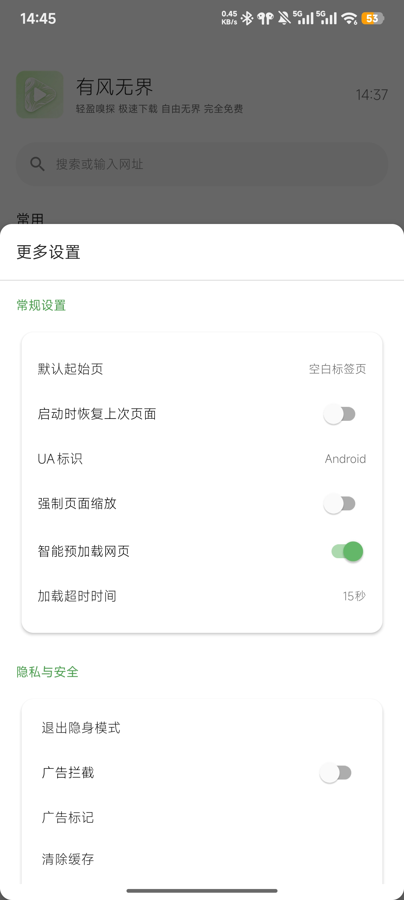
图31：设置面板整体界面
主题切换入口位于首页主题按钮及"更多"菜单 → 主题切换，支持浅色 / 深色 / 跟随系统三种模式。
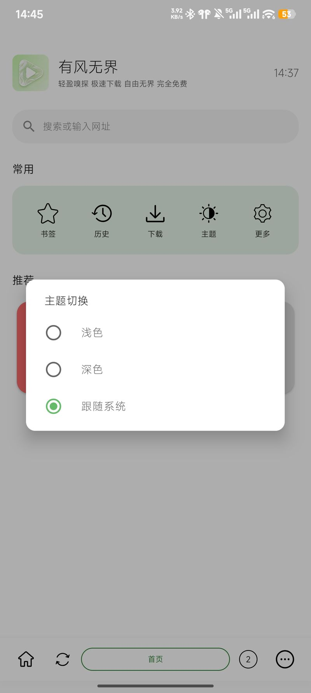
图32：主题选择弹窗（浅色 / 深色 / 跟随系统）
十三、常见问题
在下载设置中提高下载线程数可显著提升速度；软件也会根据网络情况自适应调整并发并记录最佳线程数。
智能过滤主要针对推广内容片段，正常情况下不影响正片播放。如出现误过滤，可在设置中关闭或通过"意见反馈"告知我们。
手机与电脑需在同一局域网，在播放器中点击投屏按钮，再在电脑浏览器打开提示地址即可。
视频保存在应用私有存储目录，可在"下载管理 → 已下载"中查看、播放与操作。
在"下载管理 → 下载中"点击正在下载的任务，选择"边下边播"即可。
隐身模式使用独立数据空间，书签、历史、下载等与主空间隔离，退出后自动恢复主空间数据。
十四、技术支持
本软件著作权归ZiroXin所有。
用户在软件使用过程中，如遇到软件相关问题，可通过软件内意见反馈模块提交问题。